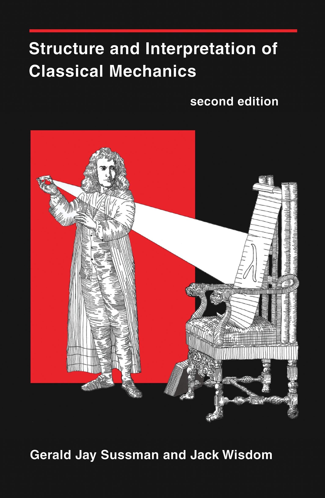
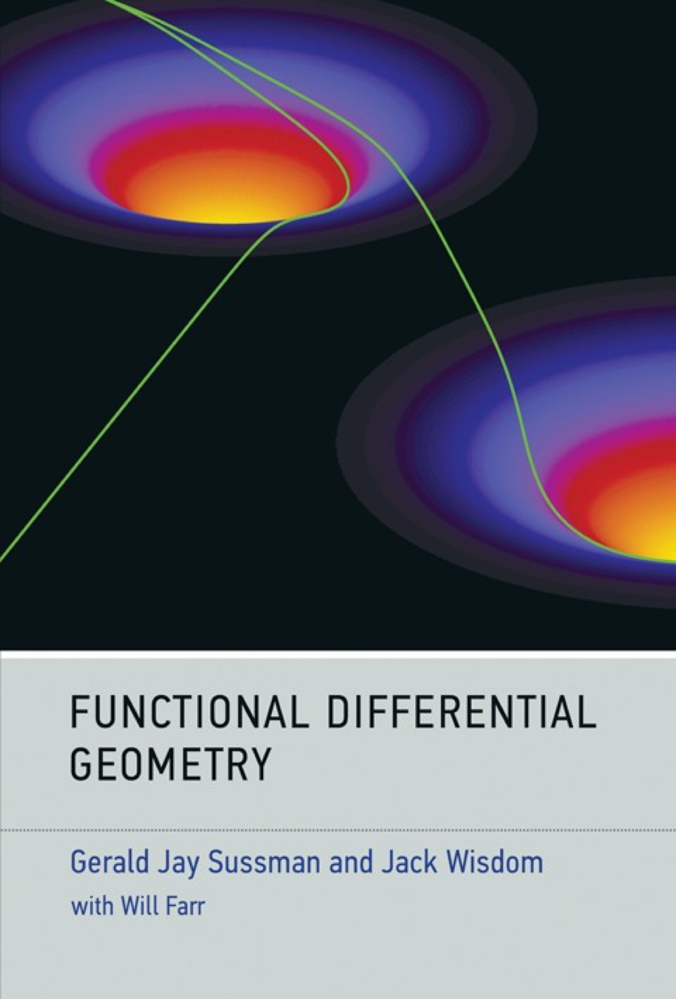
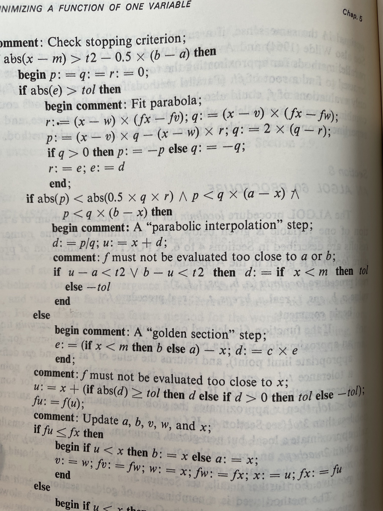
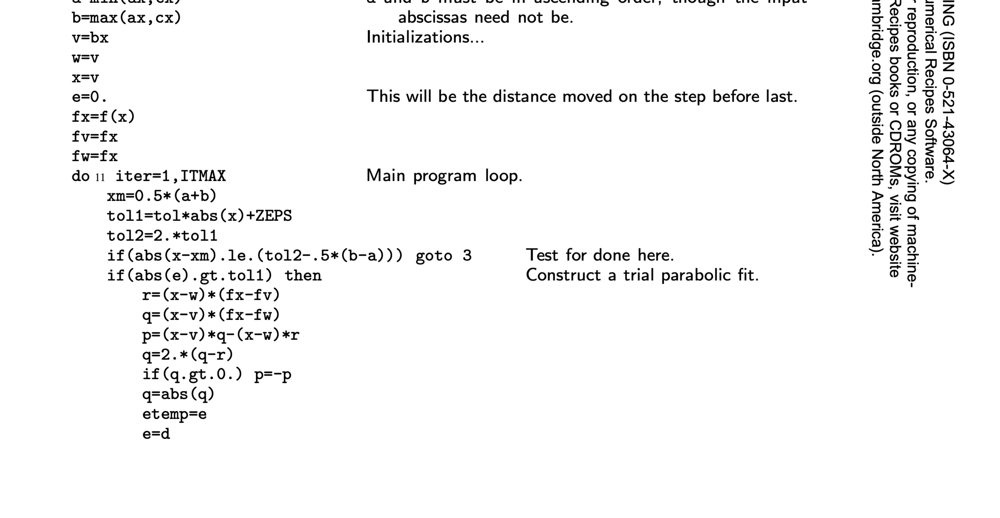
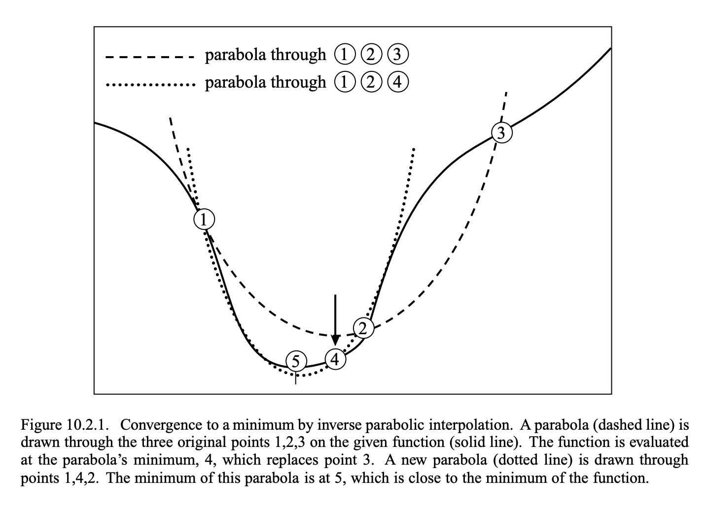

Code as Communication!
Sam Ritchie, Mentat Collective
SICM & FDG
 "programs must be written for people to read, and only incidentally for machines to execute."
~ Hal Abelson, Structure and Interpretation of Computer Programs
❤️ Free Software ❤️
https://github.com/mentat-collective/emmy

Agenda
- Code as Communication
- Examples of the alternative
- Why do we care?
- Other takes on code as comms
- Emmy, some ideas on what to do
Code as Communication
Numerical Code as Communication?
"We personally like Brent's algorithm for univariate minimization, as found on pages 79-80 of his book 'Algorithms for Minimization Without Derivatives'. It is pretty reliable and pretty fast, but we cannot explain how it works."
~ scmutils, refman.txt
Brent's Book, 1973
FORTRAN: Numerical Recipes, 1986
C++: Boost, 2006
template <class F, class T>
std::pair<T, T> brent_find_minima(F f, T min, T max, int bits, std::uintmax_t& max_iter)
noexcept(BOOST_MATH_IS_FLOAT(T) && noexcept(std::declval<F>()(std::declval<T>())))
{
BOOST_MATH_STD_USING
bits = (std::min)(policies::digits<T, policies::policy<> >() / 2, bits);
T tolerance = static_cast<T>(ldexp(1.0, 1-bits));
T x; // minima so far
T w; // second best point
T v; // previous value of w
T u; // most recent evaluation point
T delta; // The distance moved in the last step
T delta2; // The distance moved in the step before last
T fu, fv, fw, fx; // function evaluations at u, v, w, x
T mid; // midpoint of min and max
T fract1, fract2; // minimal relative movement in x
static const T golden = 0.3819660f; // golden ratio, don't need too much precision here!
x = w = v = max;
fw = fv = fx = f(x);
delta2 = delta = 0;
uintmax_t count = max_iter;
do{
// get midpoint
mid = (min + max) / 2;
// work out if we're done already:
fract1 = tolerance * fabs(x) + tolerance / 4;
fract2 = 2 * fract1;
if(fabs(x - mid) <= (fract2 - (max - min) / 2))
break;
if(fabs(delta2) > fract1)
{
// try and construct a parabolic fit:
T r = (x - w) * (fx - fv);
T q = (x - v) * (fx - fw);
T p = (x - v) * q - (x - w) * r;
q = 2 * (q - r);
if(q > 0)
p = -p;
q = fabs(q);
T td = delta2;
delta2 = delta;
// determine whether a parabolic step is acceptable or not:
if((fabs(p) >= fabs(q * td / 2)) || (p <= q * (min - x)) || (p >= q * (max - x)))
{
// nope, try golden section instead
delta2 = (x >= mid) ? min - x : max - x;
delta = golden * delta2;
}
else
{
// whew, parabolic fit:
delta = p / q;
u = x + delta;
if(((u - min) < fract2) || ((max- u) < fract2))
delta = (mid - x) < 0 ? (T)-fabs(fract1) : (T)fabs(fract1);
}
}
else
{
// golden section:
delta2 = (x >= mid) ? min - x : max - x;
delta = golden * delta2;
}
// update current position:
u = (fabs(delta) >= fract1) ? T(x + delta) : (delta > 0 ? T(x + fabs(fract1)) : T(x - fabs(fract1)));
fu = f(u);
if(fu <= fx)
{
// good new point is an improvement!
// update brackets:
if(u >= x)
min = x;
else
max = x;
// update control points:
v = w;
w = x;
x = u;
fv = fw;
fw = fx;
fx = fu;
}
else
{
// Oh dear, point u is worse than what we have already,
// even so it *must* be better than one of our endpoints:
if(u < x)
min = u;
else
max = u;
if((fu <= fw) || (w == x))
{
// however it is at least second best:
v = w;
w = u;
fv = fw;
fw = fu;
}
else if((fu <= fv) || (v == x) || (v == w))
{
// third best:
v = u;
fv = fu;
}
}
}while(--count);
max_iter -= count;
return std::make_pair(x, fx);
}
Python: Scipy, 2001
def optimize(self):
# set up for optimization
func = self.func
xa, xb, xc, fa, fb, fc, funcalls = self.get_bracket_info()
_mintol = self._mintol
_cg = self._cg
#################################
#BEGIN CORE ALGORITHM
#################################
x = w = v = xb
fw = fv = fx = func(*((x,) + self.args))
if (xa < xc):
a = xa
b = xc
else:
a = xc
b = xa
deltax = 0.0
funcalls += 1
iter = 0
while (iter < self.maxiter):
tol1 = self.tol * np.abs(x) + _mintol
tol2 = 2.0 * tol1
xmid = 0.5 * (a + b)
# check for convergence
if np.abs(x - xmid) < (tol2 - 0.5 * (b - a)):
break
# XXX In the first iteration, rat is only bound in the true case
# of this conditional. This used to cause an UnboundLocalError
# (gh-4140). It should be set before the if (but to what?).
if (np.abs(deltax) <= tol1):
if (x >= xmid):
deltax = a - x # do a golden section step
else:
deltax = b - x
rat = _cg * deltax
else: # do a parabolic step
tmp1 = (x - w) * (fx - fv)
tmp2 = (x - v) * (fx - fw)
p = (x - v) * tmp2 - (x - w) * tmp1
tmp2 = 2.0 * (tmp2 - tmp1)
if (tmp2 > 0.0):
p = -p
tmp2 = np.abs(tmp2)
dx_temp = deltax
deltax = rat
# check parabolic fit
if ((p > tmp2 * (a - x)) and (p < tmp2 * (b - x)) and
(np.abs(p) < np.abs(0.5 * tmp2 * dx_temp))):
rat = p * 1.0 / tmp2 # if parabolic step is useful.
u = x + rat
if ((u - a) < tol2 or (b - u) < tol2):
if xmid - x >= 0:
rat = tol1
else:
rat = -tol1
else:
if (x >= xmid):
deltax = a - x # if it's not do a golden section step
else:
deltax = b - x
rat = _cg * deltax
if (np.abs(rat) < tol1): # update by at least tol1
if rat >= 0:
u = x + tol1
else:
u = x - tol1
else:
u = x + rat
fu = func(*((u,) + self.args)) # calculate new output value
funcalls += 1
if (fu > fx): # if it's bigger than current
if (u < x):
a = u
else:
b = u
if (fu <= fw) or (w == x):
v = w
w = u
fv = fw
fw = fu
elif (fu <= fv) or (v == x) or (v == w):
v = u
fv = fu
else:
if (u >= x):
a = x
else:
b = x
v = w
w = x
x = u
fv = fw
fw = fx
fx = fu
iter += 1
#################################
#END CORE ALGORITHM
#################################
self.xmin = x
self.fval = fx
self.iter = iter
self.funcalls = funcalls
Scheme: 1987
;;; Brent's algorithm for univariate minimization -- transcribed from
;;; pages 79-80 of his book "Algorithms for Minimization Without Derivatives"
(define (brent-min f a b eps)
(let ((a (min a b)) (b (max a b))
(maxcount 100)
(small-bugger-factor *sqrt-machine-epsilon*)
(g (/ (- 3 (sqrt 5)) 2))
(d 0) (e 0) (old-e 0) (p 0) (q 0) (u 0) (fu 0))
(let* ((x (+ a (* g (- b a))))
(fx (f x))
(w x) (fw fx) (v x) (fv fx))
(let loop ((count 0))
(if (> count maxcount)
(list 'maxcount x fx count) ;failed to converge
(let* ((tol (+ (* eps (abs x)) small-bugger-factor))
(2tol (* 2 tol))
(m (/ (+ a b) 2)))
;; test for convergence
(if (< (max (- x a) (- b x)) 2tol)
(list x fx count)
(begin
(if (> (abs e) tol)
(let* ((t1 (* (- x w) (- fx fv)))
(t2 (* (- x v) (- fx fw)))
(t3 (- (* (- x v) t2) (* (- x w) t1)))
(t4 (* 2 (- t2 t1))))
(set! p (if (positive? t4) (- t3) t3))
(set! q (abs t4))
(set! old-e e)
(set! e d)))
(if (and (< (abs p) (abs (* 0.5 q old-e)))
(> p (* q (- a x)))
(< p (* q (- b x))))
;; parabolic step
(begin (set! d (/ p q))
(set! u (+ x d))
(if (< (min (- u a) (- b u)) 2tol)
(set! d (if (< x m) tol (- tol)))))
;;else, golden section step
(begin (set! e (if (< x m) (- b x) (- a x)))
(set! d (* g e))))
(set! u (+ x (if (> (abs d) tol)
d
(if (positive? d) tol (- tol)))))
(set! fu (f u))
(if (<= fu fx)
(begin (if (< u x) (set! b x) (set! a x))
(set! v w) (set! fv fw)
(set! w x) (set! fw fx)
(set! x u) (set! fx fu))
(begin (if (< u x) (set! a u) (set! b u))
(if (or (<= fu fw) (= w x))
(begin (set! v w) (set! fv fw)
(set! w u) (set! fw fu))
(if (or (<= fu fv) (= v x) (= v w))
(begin (set! v u) (set! fv fu))))))
(loop (+ count 1))))))))))
Actual Core Idea
My Attempt
(ns emmy.numerical.unimin.brent
"This namespace contains an implementation of Brent's method for finding the
minimum of a real-valued function."
(:require [emmy.generic :as g]
[emmy.numbers]
[emmy.numerical.unimin.bracket :as ub]
[emmy.numerical.unimin.golden :as ug]
[emmy.util :as u]
[emmy.value :as v]))
(defn- terminate?
"Brent's method terminates (ie converges) when `a` and `b` are narrow enough
that `x` falls within `2 * tolerance` of both `a` and `b`, ie:
`max(x - a, b - x) <= 2tol`
From Numerical Recipes:
\"A typical ending configuration for Brent's method is that $a$ and $b$
are `(* 2 midpoint tol)` apart, with $x$ (the best abscissa) at the midpoint
of $a$ and $b$, and therefore fractionally accurate to +-tol.\" ~Numerical
Recipes, 397.
"
[a x b tol2]
(let [half-ab (* 0.5 (- b a))
mid (* 0.5 (+ a b))
mid->x (g/abs (- x mid))]
(<= (+ mid->x half-ab) tol2)))
(defn- golden-section-step
"Returns a pair of:
- The interval width between the new `a` and `b` after the algorithm completes
this golden step
- The delta that needs to be applied to `x` to take it into the larger of the
two gaps between `a` and `b,` i.e., to `new_x`:
`xa---------new_x<---xx------xb`
NOTE that in Brent's algorithm, a golden section step wipes out the tracked
history of `p/q` parabolic steps that the algorithm uses to decide between
parabolic and golden section steps.
The goal of the dance is to force a golden section step every $log_2((b - a) /
tol1)$ steps by allowing a parabolic step as long as it halves the step taken
two iterations ago. Without this reset the algorithm would attempt fewer
beneficial parabolic steps."
[a x b]
(let [midpoint (* 0.5 (+ a b))
new-width (if (>= x midpoint)
(- a x)
(- b x))
step (* ug/inv-phi2 new-width)]
[new-width step]))
(defn- parabola-valid?
"The parabolic step `p/q` is valid if the step:
- keeps the candidate point `x` inbounds, i.e., `a < x + p/q < b`
- is at least 1/2 of `target`.
`target` is a slightly tricky quantity, and depends on the type of step taken
in the previous two iterations:
- *, golden: `target` == the full `(a, b)` interval `b - a`
- golden, *: `target` == the size of the step taken by the previous golden
- para, para: `target` == `p/q` from two steps ago
The idea is to force a golden section step every so often by narrowing the
allowed jump that a parabolic step is allowed to take, and then widening the
band to the full range whenever a golden section step occurs.
Why the step before last? Experimentally (according to Brent) it works better
than considering only the previous step, and aesthetically it feels right to
give parabolic interpolation more than one try to do a nice job."
[a x b target p q]
(let [inbounds? (and (> p (* q (- a x)))
(< p (* q (- b x))))
lt-half-target? (< (g/abs p) (g/abs (* 0.5 q target)))]
(and inbounds? lt-half-target?)))
(defn- apply-delta
"Returns `x + delta`, guarding against any `delta` addition that would return a
value outside of `(a, b)`. Specifically guards against these two cases:
- If `x` + the supplied `delta` results in a point within 2*tol of either
edge, `delta` is replaced with `tol1` pointing back toward the center of the
interval `(a, b)`.
- If `delta < tol1`, returns `x + tol1` in the direction of `delta`, to force
a step of at least `tol1`.
NOTE tol2 == 2*tol1."
[a x b delta tol1 tol2]
(let [x+delta (+ x delta)
near-edge? (or (< (- x+delta a) tol2)
(< (- b x+delta) tol2))]
(cond near-edge?
(let [middle (* 0.5 (+ a b))]
(if (<= x middle)
(+ x tol1)
(- x tol1)))
;; tiny delta?
(< (g/abs delta) tol1)
(if (pos? delta)
(+ x tol1)
(- x tol1))
:else x+delta)))
(defn- update-history
"Brent's method tracks the two best (non-candidate) points, so they can be used
to fit a candidate parabolic step.
This function accepts:
- `x2` and `x1`, the previous two best non-candidates;
- `x`, the previous candidate
- `new-pt` the current new point
and returns the third- and second-best points, i.e., the new `[x2, x1]`.
NOTE on the implementation: the assumption is that `x2` and `x1` will be
initialized to `x`, and that they'll be replaced by potentially WORSE values
that appear for the first two steps.
"
[[xx2 fx2 :as x2] [xx1 fx1 :as x1] [xx fx :as x] [xnew fnew]]
(cond (<= fnew fx) [x1 x]
(or (<= fnew fx1) (= xx1 xx)) [x1 [xnew fnew]]
(or (<= fnew fx2) (= xx2 xx) (= xx2 xx1)) [[xnew fnew] x1]
:else [x2 x1]))
(defn brent-min
"Find the minimum of the function f: R -> R in the interval [a,b] using Brent's
Method, described by Richard Brent in [Algorithms for Minimization without
Derivatives](https://books.google.com/books?id=AITCAgAAQBAJ&q=Brent%E2%80%99s#v=onepage&q=Parabolic&f=false).
Brent's method is a combination of a golden section search with a parabolic
interpolation step. Parabolic interpolation can go wild if the candidate point
is close to colinear with the search bounds, or of the points are too close
together.
Brent's method prevents this by applying an internal test that forces a golden
section step every so often. (If you want the details, see `parabola-valid?`
above.)
Supports the following optional keyword arguments:
`:callback` if supplied, the supplied fn will be invoked at each intermediate
point with the iteration count and the values of x and f(x) at each search
step.
`:relative-threshold` defaults to around 1.49e8, the sqrt of the machine
tolerance. You won't gain any benefit attempting to set the value less than
the default.
`:absolute-threshold` a smaller absolute threshold that applies when the
candidate minimum point is close to 0.
`:maxiter` Maximum number of iterations allowed for the minimizer. Defaults to
1000.
`:maxfun` Maximum number of times the function can be evaluated before
exiting. Defaults to `(inc maxiter)`.
"
([f a b] (brent-min f a b {}))
([f a b {:keys [relative-threshold
absolute-threshold
maxiter
maxfun
callback]
:or {relative-threshold (g/sqrt v/machine-epsilon)
absolute-threshold 1.0e-11
maxiter 1000
callback (constantly nil)}}]
(let [maxfun (or maxfun (inc maxiter))
[a b] [(min a b) (max a b)]
[f-counter f] (u/counted f)
xmid (* 0.5 (+ a b))
mid [xmid (f xmid)]]
(loop [;; a and b bound the interval in which the minimizer is searching.
;; `xx` is the current candidate point, and `fx` is its value.
[a [xx fx :as x] b] [a mid b]
;; The second-best and best points considered prior to this
;; iteration and its candidate point.
[x2 x1] [mid mid]
;; This value is used by `parabola-valid?` to decide whether or not
;; it's appropriate to proceed with the parabolic step, or fall back
;; to a golden section step. `parabola-valid?`'s docstring describes
;; the logic.
target 0
;; step size taken by the previous iteration.
delta 0
iteration 0]
(let [;; The total tolerance for the algorithm, and also the minimum
;; possible step to take during each iteration.
tol (+ absolute-threshold (* relative-threshold (g/abs xx)))
tol2 (* 2 tol)
converged? (terminate? a xx b tol2)]
(callback iteration xx fx)
(if (or (> iteration maxiter)
(> @f-counter maxfun)
converged?)
{:result xx
:value fx
:iterations iteration
:converged? converged?
:fncalls @f-counter}
(let [[new-target new-delta]
(if (<= (g/abs target) tol)
(golden-section-step a xx b)
;; If the target value is > the combined tolerance, generate
;; a parabolic interpolation using
;;
;; - the previous two best guesses WORSE than the candidate point, and
;; - the current candidate point
;;
;; `p` and `q` are the numerator and denominator of the step
;; required to move to the minimum of the interpolated
;; parabola from the current candidate `x`; i.e., `x + p/q`
;; lies at the parabola's minimum.
(let [[p q] (ub/parabolic-pieces x1 x x2)]
;; Only proceed with the parabolic step if the new point
;; lies inside `(a, b)` and results in a step >= 1/2
;; target. Otherwise, default to a golden section step.
(if (parabola-valid? a xx b target p q)
[delta (/ p q)]
(golden-section-step a xx b))))
xnew (apply-delta a xx b new-delta tol tol2)
new-pt [xnew (f xnew)]
;; `x` and `xnew` both lie within `(a, b)`; assign them to `l`,
;; `r` based on their ordering within the interval...
[[xl fl :as l] [xr fr :as r]] (if (< xnew xx)
[new-pt x]
[x new-pt])]
;; and then tighten the search interval down around the new
;; lowest-valued point.
(recur (if (<= fl fr)
[a l xr]
[xl r b])
(update-history x2 x1 x new-pt)
new-target
new-delta
(inc iteration)))))))))
(defn brent-max
"For convenience, we also provide the sister-procedure for finding the maximum
of a unimodal function using Brent's method.
Negate the function, minimize, negate the result."
[f a b opts]
(let [-f (comp g/negate f)]
(-> (brent-min -f a b opts)
(update :value g/negate))))
Double Pendulum
See the Pen Double Double Pendulum by Szenia Zadvornykh (@zadvorsky) on CodePen.
Torus Knot
Original Code
<!DOCTYPE html>
<html>
<head>
<meta charset="utf-8" />
<title>MathBox - Helitoroidal Surface</title>
<script
type="text/javascript"
src="https://cdn.jsdelivr.net/npm/three@0.137.0/build/three.min.js"
></script>
<script
type="text/javascript"
src="https://cdn.jsdelivr.net/npm/three@0.137.0/examples/js/controls/TrackballControls.js"
></script>
<!--
- a minified version mathbox.min.js is also available;
- recommend using a specific version (not @latest) in public sites
-->
<script
type="text/javascript"
src="https://cdn.jsdelivr.net/npm/mathbox@latest/build/bundle/mathbox.js"
></script>
<script src="https://cdn.jsdelivr.net/npm/dat.gui@latest/build/dat.gui.min.js"></script>
<link rel="stylesheet" href="../../build/mathbox.css" />
<meta name="viewport" content="initial-scale=1, maximum-scale=1" />
</head>
<body>
<script>
var mathbox = MathBox.mathBox({
plugins: ["core", "controls", "cursor", "mathbox"],
controls: {
// Trackball controls, i.e. Free quaternion rotation
klass: THREE.TrackballControls,
},
});
if (mathbox.fallback) throw "WebGL not supported";
var three = mathbox.three;
three.renderer.setClearColor(new THREE.Color(0xffffff), 1.0);
// Dat GUI
var gui = new dat.GUI();
var props = {
n: 16,
r1: 1,
r2: 0.3,
r3: 0.1,
};
gui.add(props, "n").min(0).max(32).step(1);
gui.add(props, "r1").min(0).max(3).step(0.01);
gui.add(props, "r2").min(0.01).max(0.5).step(0.01);
gui.add(props, "r3").min(0.01).max(0.2).step(0.01);
// DOM
mathbox.set("focus", 3);
var camera = mathbox.camera({
proxy: true,
position: [1, 1, 3],
});
var view = mathbox.clock({ speed: 1 / 16 }).cartesian({
range: [
[-1, 1],
[-1, 1],
[-1, 1],
],
scale: [1, 1, 1],
quaternion: [0.7, 0, 0, 0.7],
});
var vs = new THREE.Vector3();
var spine = function (θ) {
var s, c, x, y, z, x2, y2, z2, r;
var a = θ * props.n;
var b = θ;
s = Math.sin(a);
c = Math.cos(a);
r = props.r2 + props.r3;
x = 1 + c * r;
y = 0;
z = s * r;
s = Math.sin(b);
c = Math.cos(b);
r = props.r1;
x2 = x * c * r;
y2 = x * s * r;
z2 = z * r;
return vs.set(x2, y2, z2);
};
var circle = function (θ) {
var s, c, x, y, z;
var b = θ;
s = Math.sin(b);
c = Math.cos(b);
x = c * props.r1;
y = s * props.r1;
z = 0;
return vs.set(x, y, z);
};
// Compute TBN matrix
var vo = new THREE.Vector3();
var vt = new THREE.Vector3();
var vb = new THREE.Vector3();
var vn = new THREE.Vector3();
var mtbn = new THREE.Matrix4();
var e = 0.001;
var tbn = function (θ) {
var f;
vt.copy(vo.copy(spine(θ)));
vt.sub(spine(θ + e));
vt.multiplyScalar(1 / e);
vt.normalize();
if (props.n) {
vb.copy(circle(θ));
vb.sub(circle(θ + e));
vb.multiplyScalar(1 / e);
} else {
vb.copy(vo);
}
vb.normalize();
vn.crossVectors(vt, vb);
vn.normalize();
vb.crossVectors(vt, vn);
vb.normalize();
mtbn.set(
vt.x,
vb.x,
vn.x,
vo.x,
vt.y,
vb.y,
vn.y,
vo.y,
vt.z,
vb.z,
vn.z,
vo.z,
0,
0,
0,
1
);
return mtbn;
};
// Compute helitoroidal surface
var data = view.area({
rangeX: [-MathBox.π, MathBox.π],
rangeY: [-MathBox.π, MathBox.π],
expr: function (emit, θ, φ, i, j, t) {
var f = spine(θ);
var m = tbn(θ);
var c = Math.cos(φ);
var s = Math.sin(φ);
vs.set(0, c * props.r3, s * props.r3);
vs.applyMatrix4(m);
emit(vs.x, vs.y, vs.z);
},
width: 512,
height: 16,
channels: 3,
});
// Draw spine curve
var helitoroidalSurface = view.surface({
shaded: true,
color: 0xcc0040,
lineY: true,
width: 1,
});
var curves1 = view
.resample({
height: 5,
})
.line({
color: 0xffffff,
width: 2,
});
</script>
</body>
</html>
So What?
- What's wrong with this?
- How can we do better?
Existing Ideas
- Literate Programming
- LOGO's Microworlds
LOGO's Microworlds

PQ Knot
What are we communicating?
- Not just performance!
- There is more to discover!
What are the stakes?
What's next?
- SICM and FDG: Executable Textbooks
- Collaborative editing, simulation
- Full web
Thanks!
Sam Ritchie, Mentat Collective